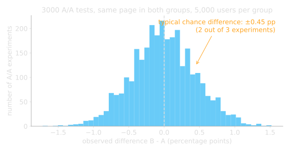
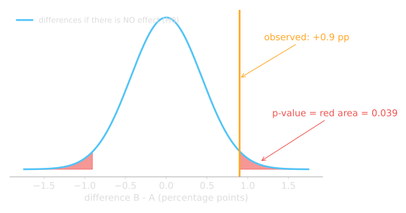
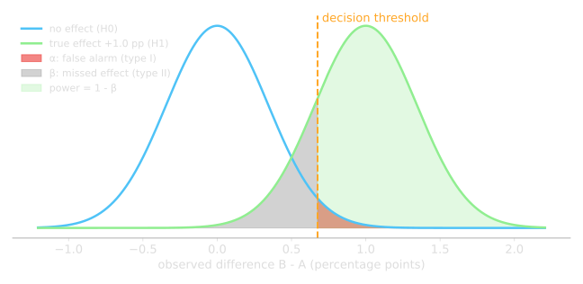
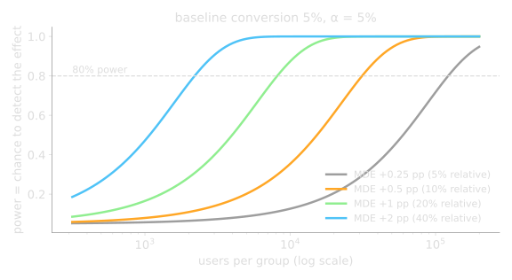
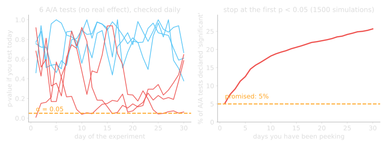
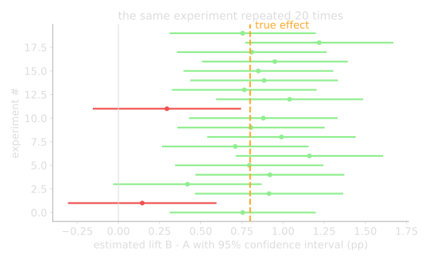
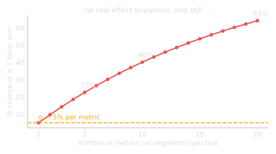
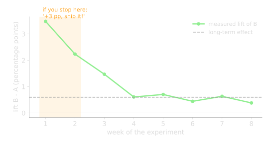
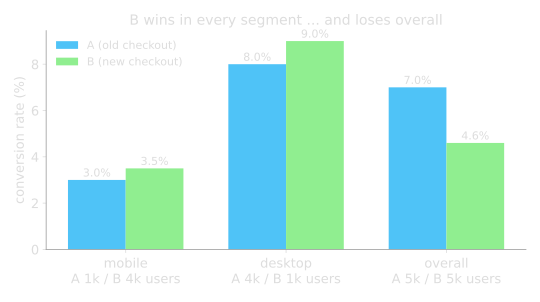

The product team built a one-page checkout. After two weeks they report:
Would you ship it?
"Replacing the 3-page checkout by a 1-page checkout increases the checkout conversion rate from 5.0% by at least 0.5 percentage points, because fewer steps mean fewer drop-offs."
| Role | ShopNow checkout example | Type |
|---|---|---|
| Primary metric (exactly one) | checkout conversion rate: buyers / visitors of the checkout | binary per user (0/1), compared as a proportion |
| Secondary metrics | revenue per visitor, average basket, time to complete checkout | continuous per user, compared as a mean |
| Guardrail metrics | page load time, error rate, returns, support tickets, unsubscribes | must not get worse, otherwise no ship |
Same page in both groups (an A/A test), 5,000 users each. What differences do we see?

If H0 were true, how often would chance alone
produce a difference at least as big as the one we saw?
That number is the p-value.

| People say | Reality |
|---|---|
| "p = 0.04, so there is a 96% chance B is better" | no. p assumes H0 is true and asks how surprising the data is. It says nothing about the probability of H0 or H1. |
| "p = 0.3, so the new checkout has no effect" | no. We just did not detect one. Maybe the effect is small, maybe we had too few users. |
| "p = 0.001, so the effect is huge" | no. With millions of users even a +0.01 pp effect gets a tiny p-value. Significance says "real", not "relevant". |
| "p = 0.06, so close, let's run a few more days" | that is peeking. Coming up. |
| B really has no effect | B really has an effect | |
|---|---|---|
| Test says "no effect" | correct | Type II error (missed it), probability β |
| Test says "effect!" | Type I error (false alarm), probability α | correct, probability = power = 1 - β |

Four knobs, three of them are decisions, not data:
rule of thumb for α = 5%, power = 80%; p = baseline rate, δ = minimum detectable effect (absolute). The 16 hides the α and power choices.
| Baseline p | MDE δ | rule of thumb | statsmodels | at 2,000 visitors/day |
|---|---|---|---|---|
| 5% | +2.0 pp (40% relative) | 1,900 | 2,200 per group | 2 days |
| 5% | +1.0 pp (20% relative) | 7,600 | 8,100 per group | 8 days |
| 5% | +0.5 pp (10% relative) | 30,400 | 31,200 per group | 1 month |
| 5% | +0.25 pp (5% relative) | 121,600 | 122,100 per group | 4 months |

from statsmodels.stats.power import NormalIndPower
from statsmodels.stats.proportion import proportion_effectsize
baseline = 0.05 # 5.0% convert today
mde = 0.005 # we care about +0.5 pp (5.0% -> 5.5%)
effect = proportion_effectsize(baseline + mde, baseline)
n_per_group = NormalIndPower().solve_power(
effect_size=effect, alpha=0.05, power=0.8, alternative="two-sided"
)
print(f"{n_per_group:,.0f} users per group")
# 31,217 users per group
# at 2,000 checkout visitors per day: about 31 days

from statsmodels.stats.proportion import proportions_ztest
from statsmodels.stats.proportion import confint_proportions_2indep
# after 31 days: visitors and buyers per group
visitors = [31_250, 31_180] # A, B
buyers = [ 1_560, 1_780] # A, B
z, p = proportions_ztest(count=buyers, nobs=visitors)
# z = -3.98, p = 0.0001
# B first, so the interval is for B - A
lo, hi = confint_proportions_2indep(
buyers[1], visitors[1], buyers[0], visitors[0]
)
# difference B - A = +0.72 pp, 95% CI [+0.36 pp, +1.07 pp]
scipy.stats.ttest_ind.

| Result | Example | Decision |
|---|---|---|
| significant, and bigger than MDE | +0.72 pp [0.36, 1.07], p = 0.0001, guardrails fine | ship |
| significant, but tiny | +0.05 pp [0.01, 0.09] with 5 million users | real, but is it worth the maintenance? business call |
| not significant, CI wide | +0.4 pp [-0.3, 1.1], p = 0.26 | inconclusive, not "no effect". Bigger test or drop the idea |
| not significant, CI narrow around 0 | +0.02 pp [-0.08, 0.12] | effect, if any, is too small to matter. Drop |
| primary wins, guardrail loses | conversion +0.7 pp, but support tickets +30% | do not ship, investigate |
All of them produce beautiful, confident, wrong dashboards.



-- who is in which group (written by the assignment service)
assignments(experiment_id, user_id, variant, assigned_at)
-- what users did (your normal fact tables)
orders(order_id, user_id, order_ts, revenue)
SELECT a.variant,
COUNT(DISTINCT a.user_id) AS users,
COUNT(DISTINCT o.user_id) AS buyers,
COUNT(DISTINCT o.user_id) * 1.0
/ COUNT(DISTINCT a.user_id) AS conversion
FROM assignments a
LEFT JOIN orders o
ON o.user_id = a.user_id
AND o.order_ts >= a.assigned_at
WHERE a.experiment_id = 'checkout_v2'
GROUP BY a.variant;
Notebook: colab/ab_testing.ipynb (solution available after the lab)
statsmodels, scipy.stats